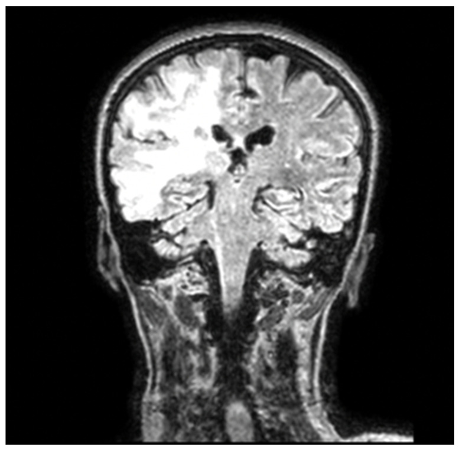
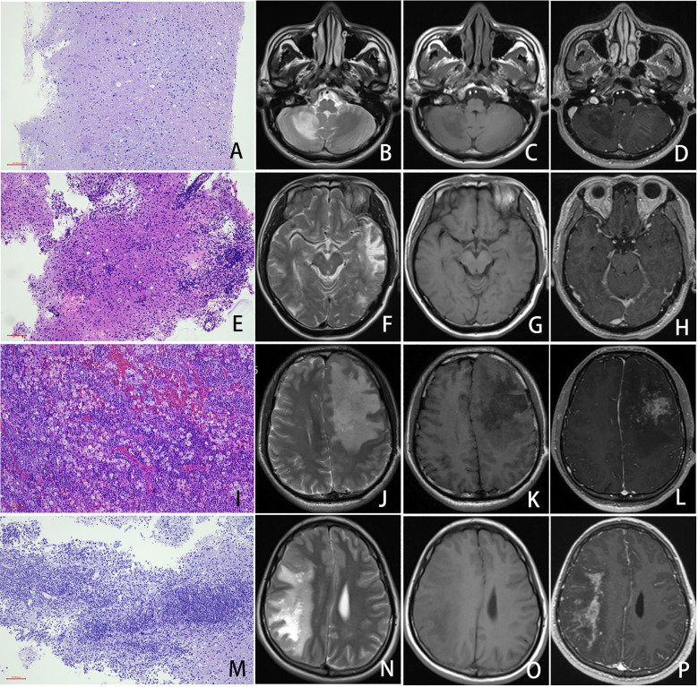

206 — PML & hội chứng viêm phục hồi miễn dịch (IRIS) / Progressive multifocal leukoencephalopathy and PML-IRIS
Tags: pattern:ton-thuong-chat-trang pattern:khong-ngam vung:nao vung:chat-trang protocol:MRI-DWI protocol:MRI-T1-Gd score:PML-2013
Mức chắc chắn (certainty): tổng hợp y văn (literature synthesis) — gộp 3 bài mở (PMC12425872, PMC12245874, PMC12441267) + 1 loạt ca AIDS–PML (PMC12897592); chưa có ca nguyên văn của nhóm.
1. Tổng quan — vì sao PML "im lặng" trên ảnh và chỉ "bùng" khi miễn dịch trở lại
- Bệnh học: virus JC (JCPyV — John Cunningham polyomavirus) tái hoạt ở người suy giảm miễn dịch, nhiễm tan tế bào oligodendrocyte → mất myelin từng ổ, không đối xứng; tế bào astrocyte phì đại kỳ quái (bizarre astrocytes) là dấu mô bệnh. Mô bệnh 19 ca AIDS–PML: 63,2% (12/19) có CD4+ < 200 tế bào/µL, phần còn lại vẫn có CD4+ ≥ 200.
- TẠI SAO không ngấm thuốc và không có hiệu ứng khối: tổn thương mất myelin + phù nội bào nhẹ nhưng hàng rào máu–não còn nguyên, viêm quanh mạch ít → gadolinium không thoát ra ngoài lòng mạch. Vì vậy "không ngấm" là dấu hiệu của PML sớm, không phải bằng chứng loại trừ. Khi có ngấm thuốc thì thường là thành phần viêm (IRIS) hoặc PML đang hoạt động mạnh; loạt 19 ca cho thấy mức viêm quanh mạch, có tương bào và mảng lympho quanh mạch tương quan có ý nghĩa với ngấm thuốc (P = 0,044; 0,011; 0,018).
- TẠI SAO T2/FLAIR sáng và T1 tối: mất myelin + tăng nước mô kẽ kéo dài T2 → FLAIR tăng tín hiệu lan tỏa, bờ không rõ, không theo mạch máu; T1 giảm tín hiệu vì mô mất cấu trúc myelin. Không có xuất huyết, không có vôi hóa — khác nhồi máu và u.
- TẠI SAO DWI chỉ sáng ở BỜ tổn thương: ở rìa đang lan, oligodendrocyte bị nhiễm và phù nội bào → hạn chế khuếch tán (DWI sáng, ADC thấp); ở trung tâm đã mất myelin hoàn toàn, khoảng nước ngoại bào tăng → ADC cao (T2 shine-through). Vì vậy bờ DWI sáng là "mặt trận" virus đang tiến, còn trung tâm sáng trên DWI có thể chỉ là hiệu ứng T2.
- Ngưỡng định lượng cốt lõi:
- Nguy cơ natalizumab (nhóm TOP, n = 6148): 53 ca PML (0,9% trong 10 năm) = 2,034/1000 bệnh nhân–năm; tại Thụy Điển giảm từ 1,49/1000 PY (2012) → 0,72/1000 PY (2018) nhờ phân tầng nguy cơ.
- 3 yếu tố nguy cơ: kháng thể JCV dương, đã dùng ức chế miễn dịch trước đó, thời gian dùng > 24 tháng.
- PCR JCV trong dịch não tủy bằng kỹ thuật siêu nhạy: độ nhạy > 95%; âm tính giả gặp khi miễn dịch đang phục hồi (virus đã bị thanh thải).
- Dấu "shrimp sign" (tổn thương chất trắng tiểu não): độ nhạy 85%, độ đặc hiệu 100% cho PML tiểu não.
- Động kinh chỉ gặp < 20% ca PML có tổn thương vỏ não.
- Điểm mấu chốt lâm sàng: PML không có thuốc kháng virus đặc hiệu; điều trị là phục hồi miễn dịch (ngừng thuốc ức chế miễn dịch, ART ở HIV). Ở HIV, CD4+ > 50 tế bào/µL lúc chẩn đoán gắn với giảm tử vong. Ở PML do natalizumab, bằng chứng gần đây cho thấy trao đổi huyết tương (PLEX) không cải thiện sống còn → không còn được khuyến cáo thường quy (điểm phản biện với thực hành cũ).
2. Mẫu hình + chẩn đoán phân biệt theo vị trí (gamut)
- Mẫu hình chung: nhiều ổ bất đối xứng, hai bên nhưng không cân xứng, lan liền nhau (confluent), tôn trọng chất trắng dưới vỏ (subcortical U-fibers), bờ không rõ, không hiệu ứng khối hoặc rất nhẹ, không ngấm thuốc giai đoạn sớm, tiến triển trong vài tuần–vài tháng.
- Theo vị trí:
- Chất trắng dưới vỏ/U-fibers (subcortical): PML, ADEM, hạ đường huyết, ngộ độc thuốc, bệnh mạch máu nhỏ.
- Quanh não thất (periventricular): MS (Dawson fingers, vuông góc với não thất), bệnh mạch máu nhỏ, HIV encephalopathy, CADASIL.
- Thể chai (corpus callosum): PML, MS, u lympho nguyên phát TKTW ("butterfly"), Marchiafava–Bignami.
- Tiểu não/thân não: PML (shrimp sign), MS, u sao bào, bệnh tạo xơ.
- Vỏ não (cortex) đơn thuần: JC virus encephalopathy (JCVE) — rất hiếm, khác PML chất trắng.
- Gamut "tổn thương chất trắng KHÔNG ngấm + KHÔNG khối": PML · HIV encephalopathy · CADASIL · bệnh chất trắng do độc chất/thuốc · hạ đường huyết · xơ hóa chất trắng sau xạ (muộn) · thiếu máu não mạn.
- Gamut "ngấm thuốc + khối" khi đang theo dõi PML: PML-IRIS (viêm phục hồi) · tái phát MS · u lympho · nhồi máu bán cấp · hoại tử phóng xạ.
- Mnemonic "PML" — Progressive, Myelin, Lytic: tiến triển nhanh vài tuần, mất myelin, nhiễm tan oligodendrocyte; không sốt, không tăng bạch cầu máu, không tăng men gan.
3. Bảng so sánh phân biệt (ma trận đối chiếu)
| Thực thể (entity) | Hình ảnh điển hình | Chốt vào (rule-in) | Chốt loại (rule-out) | Gợi ý xác nhận |
|---|---|---|---|---|
| PML | FLAIR: ổ bất đối xứng chất trắng dưới vỏ, bờ không rõ, không ngấm, không khối; DWI sáng ở rìa | Bất đối xứng + U-fibers + không ngấm + tiến triển vài tuần | Ngấm thuốc mạnh + khối rõ + bờ tròn đều → nghĩ u/áp-xe | MRI + LP PCR JCV siêu nhạy; sinh thiết nếu PCR âm mà ảnh điển hình |
| PML-IRIS | Tổn thương PML cũ to ra, phù, hiệu ứng khối, ngấm thuốc dạng vá sau khi giảm ức chế miễn dịch | Xấu đi 3–6 tuần sau ngừng thuốc/PLEX hoặc bắt đầu ART + ngấm thuốc mới | Xấu đi mà không ngấm, không phù → PML tiến triển đơn thuần | MRI lặp lại + CD4/viral load; corticoid khi có khối/chèn ép |
| MS tái phát (tumefactive) | Ổ quanh não thất, Dawson fingers, bờ tương đối rõ, ngấm vòng hở | Ngấm thuốc + vị trí quanh não thất + tuổi trẻ + tiền sử MS | Không ngấm + chất trắng dưới vỏ + tiến triển đều → PML | MRI 3 tháng/lần; JCV kháng thể; LP (bạch cầu, band) |
| ADEM | Đa ổ chất trắng + đồi thị/nền, sau nhiễm/sau tiêm; ngấm thuốc thường gặp | Khởi phát sau nhiễm 1–3 tuần + ngấm thuốc + đáp ứng corticoid | Không ngấm, tiến triển chậm không liên quan nhiễm trùng → PML | MRI sọ + tủy; LP; đáp ứng corticoid |
| HIV encephalopathy | Đối xứng quanh não thất, teo não, không ngấm, không khối | Đối xứng + teo não + HIV giai đoạn muộn | Bất đối xứng + U-fibers → PML | MRI + CD4 + viral load; loại trừ PML bằng PCR |
| CADASIL | Ổ dưới vỏ đối xứng, thùy thái dương trước + nang chêm, không ngấm | Tiền sử gia đình + đột quỵ lặp + thùy thái dương trước | Bất đối xứng, tiến triển nhanh vài tuần → PML | MRI + gen NOTCH3; không cần sinh thiết |
| Hoại tử phóng xạ | Ổ trong trường chiếu xạ, phù, ngấm "swiss cheese", có thể khối | Nằm đúng liều xạ, xuất hiện 6–24 tháng sau xạ | Ngoài trường xạ, không tiền sử xạ → không phải | MRI phổ/choline; PET; so phim xạ |
| U lympho nguyên phát TKTW | Khối quanh não thất, ngấm đồng nhất mạnh, DWI rất sáng (ADC thấp) | Ngấm mạnh + DWI sáng toàn khối + đáp ứng corticoid nhanh | Không ngấm, không khối → không phải | Sinh thiết; PET; LP tế bào học |

Coronal FLAIR: ổ tăng tín hiệu lớn, bất đối xứng ở chất trắng dưới vỏ và quanh não thất bán cầu trái (bên phải ảnh), không hiệu ứng khối, không ngấm thuốc — mẫu hình kinh điển của PML. Nguồn: J Clin Med 2026, PMC12897592 Fig. 1, CC BY 4.0.
Bốn hàng = bốn mức viêm (A–D nhẹ, E–H trung bình, I–L nặng, M–P PML-IRIS); cột trái là mô bệnh, ba cột phải là T2 / T1 / T1 sau gadolinium. Hàng M–P: tổn thương lan rộng, phù và hiệu ứng khối rõ, ngấm thuốc dạng vá mạnh — khác hẳn hàng A–D (không ngấm). Nguồn: Front Cell Infect Microbiol 2025, PMC12245874 Fig. 3, CC BY 4.0.4. Protocol chụp + tiêu chuẩn chẩn đoán 2013
- MRI sọ (1,5–3 T), tối thiểu 4 chuỗi: T2/FLAIR (lan tỏa, bờ), DWI + ADC (rìa đang hoạt động), T1 trước tiêm, T1 sau gadolinium (tìm ngấm = viêm/IRIS). Không cần CT; CT chỉ để loại trừ xuất huyết/chèn ép cấp.
- Thời điểm chụp: lúc nghi ngờ, lặp lại 3–6 tháng/lần khi theo dõi; ngay khi xấu đi sau khi giảm ức chế miễn dịch (tìm IRIS).
- Xét nghiệm: PCR JCV định lượng trong dịch não tủy (kỹ thuật siêu nhạy, độ nhạy > 95%); tế bào/bạch cầu, protein, glucose, cytology, PCR HSV/VZV/CMV, HIV; JCV kháng thể huyết thanh + chỉ số (index) ở bệnh nhân MS dùng natalizumab.
- Sinh thiết não: khi PCR âm nhưng ảnh điển hình hoặc chẩn đoán không chắc; loạt 19 ca AIDS–PML có 16 ca qua sinh thiết — mô bệnh vẫn là chuẩn vàng.
- Tiêu chuẩn đồng thuận 2013 (Berger và cộng sự):
| Mức chẩn đoán | Điều kiện |
|---|---|
| Chắc chắn (definitive) | Lâm sàng phù hợp + hình ảnh phù hợp + PCR JCV dịch não tủy dương |
| Nhiều khả năng (probable) | PCR dương + chỉ có lâm sàng hoặc chỉ có hình ảnh |
| Có thể (possible) | PCR dương đơn thuần hoặc PCR âm nhưng có cả lâm sàng và hình ảnh phù hợp |
| Không PML | Chỉ có một tiêu chuẩn lâm sàng hoặc hình ảnh |
flowchart TD
A[Nghi PML: tổn thương chất trắng không ngấm] --> B[Ngừng thuốc ức chế miễn dịch]
B --> C[Chọc dò dịch não tủy - PCR JCV siêu nhạy]
C --> D{PCR JCV dương?}
D -->|Có| E[PML xác định]
D -->|Không| F{MRI điển hình + bệnh cảnh phù hợp?}
F -->|Có| G[PML khả năng - lặp PCR và MRI]
F -->|Không| H[Sinh thiết não]
E --> I{Xấu đi 3-6 tuần + ngấm thuốc mới?}
G --> I
I -->|Có| J[PML-IRIS - cân nhắc corticoid]
I -->|Không| K[Theo dõi MRI 3-6 tháng]
- Theo dõi bệnh nhân MS dùng natalizumab: xét nghiệm JCV index mỗi 6 tháng, MRI sọ 6–12 tháng/lần, đánh giá lại nguy cơ sau 24 tháng điều trị (nguy cơ tăng theo thời gian).
- Xử trí PML-IRIS: không ngừng corticoid ngay khi đang có khối; corticoid liều trung bình–cao khi có phù/chèn ép/ngấm thuốc nhiều; theo dõi sát vì IRIS có thể gây tử vong dù bản thân PML đã ngừng tiến triển.
5. Biến thể bình thường và cạm bẫy
- Biến thể bình thường dễ nhầm: khoảng quanh mạch (perivascular spaces) giãn quanh hạch nền — dịch, không ngấm, không tiến triển; thay đổi chất trắng tuổi già đối xứng, không lan nhanh.
- Cạm bẫy 1 — "không ngấm là không viêm": PML sớm không ngấm; ngấm thuốc chỉ xuất hiện khi có viêm (IRIS). Đừng loại PML vì thiếu ngấm.
- Cạm bẫy 2 — đọc DWI sai: chỉ rìa tổn thương hạn chế khuếch tán; trung tâm có thể ADC cao. Nếu chỉ nhìn DWI sáng trung tâm sẽ tưởng nhồi máu/u.
- Cạm bẫy 3 — PCR âm: gặp ở natalizumab (tải lượng virus thấp) và khi miễn dịch đang phục hồi; PCR âm không loại trừ nếu ảnh điển hình → lặp PCR/sinh thiết.
- Cạm bẫy 4 — IRIS vs tiến triển: sau ngừng thuốc/PLEX 3–6 tuần, tổn thương to ra + phù + ngấm = IRIS, không phải "PML nặng hơn"; điều trị ngược nhau (corticoid vs không).
- Cạm bẫy 5 — U-fibers: PML ăn tới vỏ não qua U-fibers (khác nhồi máu theo lãnh thổ mạch và khác MS quanh não thất). Đây là dấu định vị mạnh.
- Cạm bẫy 6 — "shrimp sign" không phổ biến: chỉ có ở PML tiểu não; không thấy dấu này không loại trừ PML.
- Cạm bẫy 7 — thỏa mãn tìm kiếm: bệnh nhân HIV có teo não + tổn thương chất trắng → dễ gán "HIV encephalopathy" và bỏ sót PML bất đối xứng.
6. Tự lượng giá — Blind Quiz
Ca 1 — Nam 52 tuổi, HIV dương, yếu nửa người trái tiến triển 3 tuần, không sốt.
- Gợi ý: tổn thương lớn, không đối xứng; không có tiền sử chấn thương.
- Câu hỏi: Mô tả vị trí và mức lan của tổn thương? Có hiệu ứng khối không? Ba chẩn đoán phân biệt và dấu hiệu nào chốt hướng PML?
Bấm để hiện đáp án (findings + chẩn đoán)
- Dấu hiệu: ổ tăng tín hiệu FLAIR lớn ở chất trắng dưới vỏ + quanh não thất bán cầu trái, lan tới U-fibers, bờ không rõ, không hiệu ứng khối, không ngấm thuốc.
- Chẩn đoán: PML — mất myelin do JCPyV ở người suy giảm miễn dịch; hàng rào máu–não còn nguyên nên không ngấm.
- Ba phân biệt: HIV encephalopathy (đối xứng, quanh não thất), MS tumefactive (ngấm vòng hở, quanh não thất), u lympho (khối, ngấm mạnh, DWI sáng toàn khối).
- Chốt: bất đối xứng + U-fibers + không ngấm + tiến triển vài tuần → LP PCR JCV.
- Nguồn: J Clin Med 2026, PMC12897592 Fig. 1, CC BY 4.0.
Ca 2 — Bệnh nhân PML do natalizumab, ngừng thuốc 4 tuần, đau đầu tăng và liệt nặng hơn. Ảnh 4 hàng là 4 mức viêm.
- Câu hỏi: Hàng nào là PML-IRIS? Dấu hiệu nào trên ảnh phân biệt IRIS với PML tiến triển đơn thuần? Vì sao thời điểm 4 tuần lại quan trọng?
Bấm để hiện đáp án (findings + chẩn đoán)
- Hàng M–P = PML-IRIS: tổn thương lan rộng, phù, hiệu ứng khối, và ngấm thuốc dạng vá mạnh trên T1 sau gadolinium (cột P).
- Phân biệt: PML tiến triển không ngấm, không phù, không khối; IRIS ngấm + phù + khối do miễn dịch tấn công ổ virus.
- Vì sao 4 tuần: IRIS điển hình xuất hiện 3–6 tuần sau ngừng thuốc ức chế miễn dịch hoặc PLEX — đúng cửa sổ thời gian này.
- Xử trí: corticoid khi có phù/chèn ép; không tăng lại ức chế miễn dịch một cách mù quáng.
- Nguồn: Front Cell Infect Microbiol 2025, PMC12245874 Fig. 3, CC BY 4.0.
Bài liên quan chéo
- 200 – Tổng quan hệ Thần kinh
- 214 – Nhiễm trùng hệ thần kinh trung ương
- 215 – Bệnh mất myelin
- 204 – Hoại tử phóng xạ sau xạ trị u não
- 242 – PACNS: điều trị duy trì và theo dõi tái phát
Ảnh
images/206_pml_MRI_PMC12897592.jpg— FLAIR coronal, PMC12897592 Fig. 1, CC BY 4.0.images/206_pml-iris_MRI_PMC12245874.jpg— bảng 4 mức viêm (T2/T1/Gd), PMC12245874 Fig. 3, CC BY 4.0.- Nguồn + giấy phép chi tiết:
images/CREDITS.md.
Không dùng để chẩn đoán độc lập khi chưa có người hướng dẫn.